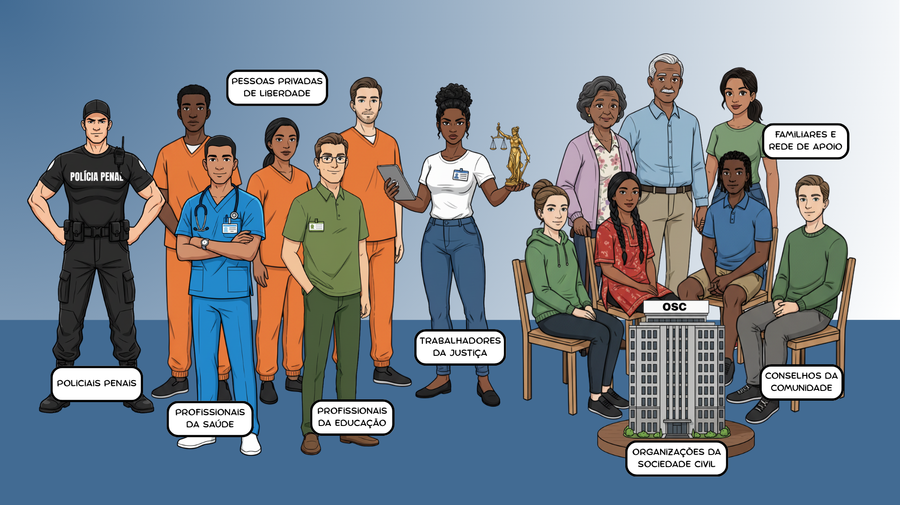

Apresentação da Unidade
Olá, estudante-trabalhador! Seja bem-vindo!
Nesta Unidade, iremos estudar as políticas de promoção da saúde e de prevenção de agravos e doenças no contexto da Política Nacional de Atenção Integral à Saúde das Pessoas Privadas de Liberdade no Sistema Prisional (PNAISP), suas implicações no processo de trabalho de todos que atuam no sistema prisional e interlocuções com outras políticas de saúde voltadas ao sistema prisional.
Vamos nos aprofundar nos conceitos, elementos e atores que compõem tais políticas e, com base nisso, discutir estratégias para realizar ações em saúde considerando que cada ator do sistema prisional é um potencial agente de mudanças intramuros. Sobretudo, faremos uma reflexão crítica sobre os desafios e as oportunidades para a realização de ações integradas de promoção da saúde e de prevenção de agravos e doenças, buscando a melhoria da qualidade de vida das pessoas privadas de liberdade (PPL) e de todos que atuam no ambiente prisional.
Que seja uma rica jornada!
Objetivos de Aprendizagem da Unidade
Diferenciar os conceitos e as ações de Promoção da Saúde e Prevenção de Agravos e Doenças;
Compreender o conceito ampliado de saúde e suas implicações;
Identificar os atores da comunidade prisional que podem contribuir com a promoção da saúde no ambiente prisional;
Conhecer o papel dos agentes promotores de saúde;
Reconhecer os desafios e oportunidades para o planejamento/adaptação de ações integradas de promoção da saúde e prevenção de agravos e doenças no âmbito prisional;
Conhecer os resultados esperados e ações indicadas no Plano Nacional de Saúde no Sistema Prisional para o controle dos agravos e doenças mais prevalentes;
Identificar parcerias que propiciem o desenvolvimento de ações integradas de promoção da saúde e prevenção de agravos e doenças, incluindo a vigilância em saúde e a segurança, no sistema prisional;
Reconhecer as implicações dos processos de trabalho na promoção da saúde e prevenção de agravos e doenças.
Carga Horária de Estudo: 6 horas
1.1 A promoção da saúde e a prevenção de agravos e doenças
A palavra saúde pode não ter o mesmo significado para todas as pessoas e, a depender do contexto social, econômico, político e cultural, sofre modificações ao longo do tempo (Scliar, 2007).
A partir da Reforma Sanitária e da VIII Conferência Nacional de Saúde, em 1986, o conceito de saúde passou a compreender fatores da nossa vida que se estendem para além da simples ausência de doença, como o acesso à educação, as condições de moradia e trabalho, o meio ambiente e o acesso aos serviços de saúde. Essa nova forma de compreender a saúde é tida hoje como “conceito ampliado de saúde”, considerando que tais fatores condicionam e determinam a situação de saúde das pessoas (Brasil, 1986).
Foi com base nessa e em outras premissas que a Política Nacional de Promoção da Saúde (PNPS) foi instituída em 2006 com o objetivo de promover a equidade e melhorar as condições de saúde e modos de viver (Brasil, 2018).
A promoção da saúde representa um esforço coletivo para reduzir as desigualdades por meio do enfrentamento dos determinantes sociais da saúde individual e coletiva nos diferentes ambientes (Brasil, 2021).
Para compreender melhor como a promoção da saúde acontece na prática, veja os temas prioritários estabelecidos pela PNPS e algumas experiências realizadas no sistema prisional (Brasil, 2021):
Formação e educação permanente
Veja o exemplo do projeto Quebrando Barreiras, no Rio Grande do Sul. O projeto realizou oficinas de educação permanente com diferentes atores do sistema prisional.Alimentação adequada e saudável
A Horta da Esperança, de Campo Grande, promove a ressocialização dos trabalhadores e a integração com a sociedade por meio do cultivo e distribuição de alimentos saudáveis.Práticas corporais e atividades físicas
O projeto instituído pela Agência Estadual de Administração Penitenciária de Mato Grosso do Sul promove atividades de alongamento, relaxamento e exercícios aeróbicos para minimizar os efeitos do sedentarismo na PPL.Enfrentamento do uso do tabaco e de seus derivados
Conheça a iniciativa da Secretaria de Saúde do Distrito Federal de elaborar um plano de controle do tabagismo para o sistema prisional.Enfrentamento do uso abusivo de álcool e de outras drogas
Veja a estratégia utilizada no Espírito Santo em que equipes psicossociais promovem grupos para acompanhar a PPL e abordar questões relacionadas à saúde mental e à dependência química.Promoção da cultura da paz e dos direitos humanos
Conheça a oficina de fotografia em uma penitenciária feminina em Porto Alegre (RS) que reverberou em discussões sobre direitos humanos.Promoção do desenvolvimento sustentável
Conheça o exemplo do estado de São Paulo, uma iniciativa de horta orgânica sustentável que promove também alimentação saudável e ressocialização.Perceba que, em todos os casos, a saúde não está exatamente no centro das ações, mas acaba sendo contemplada pelas atividades desenvolvidas. É possível perceber também que, em todas as ações, há um trabalho intersetorial entre saúde, justiça e segurança pública.
Reflexão
Olhando para as experiências compartilhadas, você consegue visualizar alguma que poderia ser desenvolvida na instituição penal em que você trabalha ou conhece?
1.1.1 Promoção e prevenção: quais são as diferenças?
Como já vimos, a promoção da saúde almeja melhorar as condições de vida, considerando os determinantes sociais da saúde, por meio de ações intersetoriais. Ações de prevenção, por sua vez, buscam evitar o surgimento ou a proliferação de agravos e doenças, considerando os riscos de cada indivíduo desenvolver determinada condição de saúde (Brasil, 2013a).
Quando se trata de prevenção de doenças, podemos classificar os esforços em quatro níveis (Brasil, 2013a; Leavell; Clark, 1976):
Clique para interagir
Perceba que, para realizar ações de prevenção, é imprescindível a atuação da equipe de Atenção Primária Prisional (eAPP) ou de profissionais da saúde atuantes nas instituições penais, uma vez que tais ações demandam conhecimento técnico. Ainda assim, há necessidade de articulação com outros atores, como a polícia penal, para que as atividades possam ser executadas e sejam efetivas.
1.2 O direito à saúde no sistema prisional e as oportunidades para promover saúde
O direito à saúde da população privada de liberdade é garantido pela Constituição Federal (Brasil, 1988) e orientada pela PNAISP. No entanto, a realidade do sistema prisional brasileiro é caracterizada por fatores que dificultam o acesso das PPL a esse direito. Apesar dos avanços conquistados no âmbito da saúde prisional, ainda existem desafios importantes no que se refere à melhoria de indicadores de saúde e à redução da concentração de agravos e doenças no ambiente prisional. Podemos indicar dois grupos de fatores que transformam as instituições prisionais em “amplificadores institucionais” da disseminação de doenças (Andrews; Liu; Croda, 2023):
Estruturantes: superlotação, ausência de sistemas de ventilação e saneamento básico adequados, alta concentração de umidade, entre outros;
Assistenciais: dificuldade de acesso à saúde integral - considerando aqui não só a eAPP, mas também a rede especializada e hospitalar - e a medicamentos em tempo oportuno, entre outros.
As consequências desses fatores ficam evidentes quando comparamos a expectativa de vida da população privada de liberdade à da população em geral: enquanto a população em geral apresentou expectativa de vida de 76,4 anos em 2023, a população privada de liberdade apresentou tempo médio de vida de 36 anos e 6 meses (Conselho Nacional de Justiça, 2023; Brasil, 2024).
Ainda, há evidências de que homens privados de liberdade apresentam maior risco de morte por causas relacionadas à saúde, violência e suicídio, em comparação com a população em geral (Liu et al., 2021).
A elevada concentração de doenças no ambiente prisional não apenas afeta as PPL, mas também expõe a riscos aqueles que convivem nesse espaço, como profissionais e visitantes. Atuar na promoção da saúde e na prevenção de agravos e doenças é, portanto, uma tarefa conjunta em benefício da comunidade prisional como um todo.
1.2.1 As estratégias previstas para a promoção da saúde no sistema prisional
A fim de superar o modelo assistencial reducionista, focado na doença, como estratégia para controlar agravos em saúde, o Plano Nacional de Saúde no Sistema Penitenciário (PNSSP) apontou caminhos para a consolidação da assistência à saúde integral da PPL em 2003 (Brasil, 2003).
Naquele cenário, o PNSSP elencou temas prioritários para o planejamento de ações em saúde pelas eAPP e estabeleceu metas e resultados esperados para cada tema. As prioridades descritas pelo plano envolviam ações de prevenção de agravos e doenças mais prevalentes, garantia de espaços físicos adequados, acesso à alimentação adequada e atividades físicas, organização da assistência em saúde prisional, entre outras (Brasil, 2003).
As ações sugeridas pelo PNSSP constituíram uma referência importante para o planejamento e gerenciamento da saúde prisional, e, com a instituição da PNAISP, alguns elementos foram incorporados para aproximar o cuidado em saúde prisional à Rede de Atenção à Saúde (RAS) como um todo (Quadro 1) (Brasil, 2014).
Quadro 1 - Temas prioritários e ações previstas pela PNAISP
Doenças transmissíveis e não transmissíveis
Promover ações de prevenção de doenças transmissíveis e não transmissíveis; desenvolver ações visando à adoção de hábitos saudáveis de vida (exemplos: controle do tabagismo e alcoolismo, diminuição do estresse e promoção de atividade física).
Saúde da mulher
Realizar ações de prevenção do câncer de mama e de colo do útero e garantir o acompanhamento do pré-natal com a integração de equipes do território vinculadas à Rede de Saúde Materno-Infantil.
Saúde bucal
Promover ações de orientação sobre higiene e autoexame da boca (exemplo: palestras sobre escovação e avaliação bucal).
Saúde mental
Atuar na prevenção de agravos e doenças decorrentes do confinamento, na redução do uso de álcool e drogas e na reabilitação de usuários, assim como garantir o acesso da PPL aos programas de saúde mental.
Programa de imunizações
Garantir a oferta de imunizantes (como a vacinação para hepatites e outras do calendário de adultos) a toda PPL, funcionários e voluntários que prestam serviços no sistema prisional.
Reflexão
Olhando para as ações previstas pela PNAISP, você consegue identificar alguma que acontece na sua instituição?
Ao considerar cada eAPP como um ponto de atenção da RAS, a PNAISP objetivou qualificar a atenção em saúde prisional por meio da integração das eAPP ao território em que se inserem. Com isso, buscou incentivar que as ações de todos os programas do Ministério da Saúde se estendessem para o sistema prisional.
Portanto, assim como se dá o planejamento da atenção primária nos municípios e estados, as práticas em saúde no sistema prisional devem ter como base as características epidemiológicas, sociais e estruturais desse ambiente, permitindo uma abordagem mais sensível e eficaz conforme o contexto do território em que está inserido.
1.3 A humanização na promoção da saúde e de ambientes mais saudáveis
No mesmo contexto de criação do PNSSP, em 2003, foi lançada a Política Nacional de Humanização (PNH) com o objetivo de promover mudanças no processo de cuidado em saúde (Brasil, 2010). Na PNAISP, a PNH aparece de forma transversal no objetivo: “qualificar e humanizar a atenção à saúde no sistema prisional por meio de ações conjuntas das áreas da saúde e da justiça” (Brasil, 2014, Art. 6º, inc. III).
Entre os princípios da PNH estão a transversalidade, a inseparabilidade entre atenção e gestão e a autonomia dos sujeitos e coletivos. Já as diretrizes são: o acolhimento; a gestão participativa e cogestão; a ambiência; a clínica compartilhada; a defesa dos direitos dos usuários; e a valorização do trabalhador (Brasil, 2013c).
A implementação dessa política no sistema prisional pode ser desenvolvida com base no planejamento, na execução e no monitoramento de ações, utilizando como método de trabalho a produção de saúde pela tríade: gestores, trabalhadores e usuários. A seguir, vamos aprofundar as dimensões do acolhimento e da ambiência para promoção da humanização no contexto prisional.
1.3.1 Acolhimento como diretriz da humanização
A qualificação dos processos de acolhimento no sistema prisional pode ser uma ferramenta potente para a produção de humanização, podendo ser realizada por meio de ações para a população privada de liberdade e para servidores, considerando os diferentes momentos da vivência no ambiente prisional (Quadro 2).
Quadro 2 - Ações para produção de acolhimento nos diferentes momentos no sistema prisional
PPL
Ao chegar
- Promover a escuta sobre adaptação ao ambiente prisional e sentimentos em relação à distância das redes de apoio;
- Avaliar as condições de saúde e identificar adoecimentos prévios.
Ao ficar
- Ofertar educação permanente sobre o cuidado em saúde, estimulando a autonomia e corresponsabilidade do cuidado;
- Estimular a manutenção de redes de apoio;
- Garantir o atendimento integral à saúde e fortalecer o vínculo entre a equipe e a PPL.
Ao sair
- Preparar orientações para o retorno à rotina após o cumprimento da pena, construindo estratégias para o reposicionamento social de forma intersetorial.
Servidor
Ao chegar
- Acompanhar a adaptação aos processos e rotinas de trabalho, seja no início da carreira, seja no retorno de um período de afastamento, considerando o contexto externo de vulnerabilidade socioemocional.
Ao ficar
- Acompanhar e avaliar os aspectos relacionados à qualidade de vida, à motivação e à saúde mental;
- Mapear e prevenir adoecimentos;
- Avaliar a necessidade de ajustes nas atividades desenvolvidas pelo profissional.
Ao sair
- Acompanhar e preparar o profissional para a finalização de um ciclo de trabalho, por meio de grupos de convivência e aconselhamento profissional, por exemplo.
Perceba que cada momento demanda diferentes estratégias, que precisam ser construídas e costuradas de acordo com as necessidades de cada público, demandando adaptação do organograma e fluxos de trabalho intersetoriais.
1.3.2 Ambiência como diretriz da humanização
Reflexão
- Imagine um ambiente de cuidado em saúde que você gostaria de frequentar. Como são as paredes? Qual é o cheiro desse espaço? Você se sente confortável, acolhido e protegido nele?
- Agora, olhe para a unidade de saúde das instituições penais que você conhece. São próximas ao que você imaginou? Como você, enquanto trabalhador, se sente nesse espaço?
Leitura complementar
A Experiência da Diretriz de Ambiência da Política Nacional de Humanização
BRASIL, 2017.
Acessar Cartilha HumanizaSUSA ambiência, no âmbito da PNH, não está relacionada apenas a adequações arquitetônicas e meramente visuais, mas também ao efeito que o espaço provoca na percepção e no cuidado em saúde dos indivíduos (Verdi; Matias; Garcia Júnior, 2014). A produção de espaços saudáveis depende do envolvimento de todos os sujeitos, a fim de promover qualidade de vida, equidade em saúde e a desconstrução de preconceitos (Brasil, 2017).
A qualidade de vida e o bem-estar laboral, no âmbito do sistema prisional, carecem de atenção e intervenções. Algumas pesquisas demonstram dados preocupantes de processos de adoecimento, especialmente relacionados a: relações interpessoais; ausência de promoção da saúde; e reconhecimento profissional dos trabalhadores do sistema prisional (Brasil, 2023; Ferreira; Paschoal, 2023).
Um estudo de âmbito nacional sobre a saúde física e mental dos servidores do sistema prisional identificou que o ambiente físico no sistema prisional não coopera com a promoção da saúde. Já as relações interpessoais foram apontadas como fator protetivo importante de manutenção da saúde (Brasil, 2023).
Apesar dos desafios, algumas ações vêm sendo implementadas, em conformidade com as diretrizes da PNH e PNPS, para a construção de espaços saudáveis para a população privada de liberdade e para os servidores:
A criação de espaços mais saudáveis pode ser uma ferramenta para impulsionar mudanças no processo de trabalho tradicional, contribuindo para o enfrentamento das dificuldades de promoção da saúde no sistema prisional brasileiro (Verdi; Matias; Garcia Júnior, 2014).
Tente exercitar!
Com base no que vimos até agora, pense duas ações de promoção de humanização, no contexto prisional, que contemplem 1 princípio e 2 diretrizes da PNH e avalie reflexivamente qual ou quais processos de trabalho essa prática poderia melhorar.
Para enfrentar os desafios de forma coletiva e intersetorial, vamos conhecer agora os atores que compõem a comunidade prisional e como cada um pode contribuir com a promoção da saúde no sistema prisional.
1.4 Os atores da comunidade prisional na promoção da saúde
A comunidade prisional é representada por um conjunto de atores que trabalham, atuam e vivem no espaço prisional. Tais atores são fundamentais na luta pelos direitos da população privada de liberdade e dos trabalhadores do sistema prisional (Castro; Sánchez; Larouzé, 2014; Ely et al., 2023; Possuelo et al., 2024).
Compõem a comunidade prisional, entre outros atores:

1.4.1 Agentes promotores de saúde no sistema prisional
Agentes promotores de saúde são pessoas que estão em privação de liberdade e que desempenham um papel semelhante ao dos Agentes Comunitários de Saúde (ACS): realizam atividades de promoção da saúde e prevenção de agravos e doenças, auxiliam no acompanhamento das pessoas em tratamento, especialmente os de longa duração, identificam demandas de saúde das PPL, entre outras atividades (Brasil, 2003; Padilha, 2023).
A institucionalização desses atores foi considerada pelo PNSSP uma estratégia para qualificar o acesso em saúde da população privada de liberdade, e, mesmo não tendo sido retomada pela PNAISP, os agentes promotores de saúde estão presentes em diversos estabelecimentos prisionais, e práticas exitosas vêm surgindo a partir desse trabalho (Padilha, 2023).
Reflexão
- Na instituição penal em que você atua, há PPL que executam tarefas semelhantes às de agentes promotores de saúde?
- Você visualiza parceiros e formas de implantar essa estratégia na instituição?
1.5 Saúde, segurança e vigilância em saúde: estratégias para promover saúde e prevenir agravos e doenças de forma integrada
Com base no que estudamos até agora, podemos listar algumas ações de promoção da saúde e prevenção de agravos e doenças voltadas para o contexto prisional, contemplando os resultados do PNSSP e as orientações da política de promoção da saúde, de forma integrada entre atores da comunidade prisional:
- Realização de campanhas de vacinação para a população privada de liberdade e trabalhadores;
- Implementação dos agentes promotores de saúde nas instituições prisionais;
- Elaboração de programas de promoção da saúde envolvendo trabalho, geração de renda e ressocialização;
- Institucionalização do Programa Saúde na Escola na instituição prisional.
Por onde começar?
Primeiro, pelo reconhecimento do território
(Brasil, 2021)- Quantas PPL há na instituição? Quais são as características delas? São escolarizadas? Qual é a distribuição etária?
- Quais são as condições de vida das PPL? Há acesso a banheiros com esgotamento adequado? Há ventilação nas celas?
- Quais são os indicadores de saúde da instituição? Quais são os dados de morbidade e mortalidade? As pessoas se exercitam e se alimentam bem?
- Quais são os serviços de saúde disponíveis dentro e fora da instituição?
- O que a eAPP realiza sobre determinado problema? Quais são as dificuldades?
Segundo, pela construção de redes intersetoriais para buscar soluções coletivas
(Brasil, 2021)- Realização do mapeamento dos atores da comunidade prisional e dos setores e instituições que podem contribuir com a construção de ações;
- Identificação dos problemas e planejamento de ações em conjunto, definindo papeis para cada ator envolvido;
- Organização do modo de governança da rede (grupo de trabalho, fóruns etc.);
- Instituição de cronograma de acompanhamento das ações e avaliação dos resultados.
E agora, você acha que é possível promover saúde no sistema prisional?
Encerramento da Unidade
O ambiente prisional impõe desafios importantes no âmbito da promoção da saúde e prevenção de
agravos e
doenças. Nesta
Unidade, discutimos estratégias e propostas de ações em saúde para o sistema prisional com uma
abordagem
ampliada e
humanizada, considerando os determinantes sociais e os diversos atravessadores da garantia do
direito à
saúde e vida
digna da população privada de liberdade.
A promoção da saúde no sistema prisional vai muito além do atendimento clínico. Ela é, sobretudo, um
instrumento potente
de transformação social e de fortalecimento da cidadania. Ao assegurar o acesso universal e integral
à
saúde para as
PPL, reafirma o princípio de que os direitos humanos não são suspensos pela condição de privação de
liberdade. Promover
a saúde nesse contexto é reconhecer a dignidade intrínseca de cada indivíduo, combater as
desigualdades
estruturais e
criar oportunidades reais de reintegração social.
Investir em saúde prisional significa não apenas prevenir agravos e doenças, mas também
construir
caminhos de inclusão,
reduzir a reincidência criminal e fortalecer o pacto democrático que sustenta uma sociedade mais
justa, humana e
igualitária.
Referências importantes
BRASIL. Ministério da Saúde. Secretaria de Vigilância em Saúde. Departamento de Análise em Saúde e Doenças não Transmissíveis. Promoção da Saúde: aproximações ao tema. Caderno 1. Brasília, 2021. Disponível em: http://bvsms.saude.gov.br/bvs/publicacoes/promocao_saude_aproximacoes_tema.pdf . Acesso em: 28 jul. 2025.
BRASIL. Ministério da Saúde. Secretaria de Atenção à Saúde. Departamento de Atenção Básica. Rastreamento. Brasília, 2013a. (Cadernos de Atenção Primária: v. 2, n. 29). Disponível em: https://bvsms.saude.gov.br/bvs/publicacoes/rastreamento_caderno_atencao_primaria_n29.pdf . Acesso em: 2 jul. 2025.
BRASIL. Ministério da Saúde. Secretaria de Atenção à Saúde. Política Nacional de Humanização: o que é, como implementar (uma síntese das diretrizes e dispositivos da PNH em perguntas e respostas). Brasília, 2010. Disponível em: https://www.redehumanizasus.net/sites/default/files/diretrizes_e_dispositivos_da_pnh1.pdf . Acesso em: 28 jul. 2025.
POSSUELO, L. G. et al. (org.). Tuberculose e hepatite C no sistema prisional: contribuições e orientações à sociedade civil. (Quebrando Barreiras). Santa Cruz do Sul: Ed. do Autor, 2024. Disponível em: http://repositorio.unisc.br:8080/jspui/handle/11624/3773 . Acesso em: 28 jul. 2024.
Referências
ANDREWS, J. R.; LIU, Y. E.; CRODA, J. Enduring Injustice: Infectious Disease Outbreaks in Carceral Settings. The Journal of Infectious Diseases, v. 229, n. 2, p. 307-309, 2023. Disponível em: https://academic.oup.com/jid/article/229/2/307/7231239 . Acesso em: 28 jul. 2025.
BRASIL. Instituto Brasileiro de Geografia e Estatística. Em 2023, expectativa de vida chega aos 76,4 anos e supera patamar pré-pandemia. Agência IBGE notícias, 29 nov. 2024. Disponível em: https://agenciadenoticias.ibge.gov.br/agencia-noticias/2012-agencia-de-noticias/noticias/41984-em-2023-expectativa-de-vida-chega-aos-76-4-anos-e-supera-patamar-pre-pandemia . Acesso em: 28 jul. 2025.
BRASIL. Ministério da Justiça e Segurança Pública. Ministério da Saúde. Secretaria Nacional de Políticas Penais. Fundação Oswaldo Cruz. Pesquisa Cenários da saúde física e mental dos servidores do sistema penitenciário brasileiro. Brasília, 2023. Disponível em: https://www.gov.br/senappen/pt-br/acesso-a-informacao/acoes-e-programas/servidores-da-execucao-penal/saude/cenarios-da-saude-fisica-e-mental/pesquisa-cenario-da-saude-fisica-e-mental-dos-servidores.pdf . Acesso em: 28 jul. 2025.
BRASIL. Ministério da Saúde. Secretaria de Vigilância em Saúde. Departamento de Análise em Saúde e Doenças não Transmissíveis. Promoção da Saúde: aproximações ao tema. Caderno 1. Brasília, 2021. Disponível em: http://bvsms.saude.gov.br/bvs/publicacoes/promocao_saude_aproximacoes_tema.pdf . Acesso em: 28 jul. 2025.
BRASIL. Ministério da Saúde. Secretaria de Vigilância em Saúde. Secretaria de Atenção à Saúde. Política Nacional de Promoção da Saúde (PNPS): Anexo I da Portaria de Consolidação nº 2, de 28 de setembro de 2017, que consolida as normas sobre as políticas nacionais de saúde do SUS. Brasília, 2018. Disponível em: https://bvsms.saude.gov.br/bvs/publicacoes/politica_nacional_promocao_saude.pdf . Acesso em: 28 jul. 2025.
BRASIL. Ministério da Saúde. A Experiência da Diretriz de Ambiência da Política Nacional de Humanização - PNH. Brasília, 2017. Disponível em: http://redehumanizasus.net/lancamento-da-cartilha-humanizasus . Acesso em: 28 jul. 2025.
BRASIL. Ministério da Saúde. Ministério da Justiça e Segurança Pública. Portaria Interministerial nº 1, de 2 de janeiro de 2014. Institui a Política Nacional de Atenção Integral à Saúde das Pessoas Privadas de Liberdade no Sistema Prisional (PNAISP) no âmbito do Sistema Único de Saúde (SUS). Diário Oficial da União, Brasília, DF, 3 jan. 2014. Disponível em: https://bvsms.saude.gov.br/bvs/saudelegis/gm/2014/pri0001_02_01_2014.html . Acesso em: 28 jul. 2025.
BRASIL. Ministério da Saúde. Secretaria de Atenção à Saúde. Departamento de Atenção Básica. Rastreamento. Brasília, 2013a. (Cadernos de Atenção Primária: v. 2, n. 29). Disponível em: https://bvsms.saude.gov.br/bvs/publicacoes/rastreamento_caderno_atencao_primaria_n29.pdf . Acesso em: 2 jul. 2025.
BRASIL. Ministério da Saúde. Ministério da Justiça. Política Nacional de Atenção Integral à Saúde das Pessoas Privadas de Liberdade no Sistema Prisional. Brasília, 2013b. (Fôlder). Disponível em: https://bvsms.saude.gov.br/bvs/folder/politica_nacional_saude_sistema_prisional.pdf . Acesso em: 28 jul. 2025.
BRASIL. Ministério da Saúde. Secretaria de Atenção à Saúde. Política Nacional de Humanização: PNH. Brasília, 2013c. Disponível em: https://bvsms.saude.gov.br/bvs/publicacoes/politica_nacional_humanizacao_pnh_folheto.pdf . Acesso em: 3 jul. 2025.
BRASIL. Ministério da Saúde. Secretaria de Atenção à Saúde. Política Nacional de Humanização: o que é, como implementar (uma síntese das diretrizes e dispositivos da PNH em perguntas e respostas). Brasília, 2010. Disponível em https://www.redehumanizasus.net/sites/default/files/diretrizes_e_dispositivos_da_pnh1.pdf . Acesso em: 28 jul. 2025.
BRASIL. Ministério da Saúde. Portaria Interministerial nº 1.777, de 9 de setembro de 2003. Aprova o Plano Nacional de Saúde no Sistema Penitenciário. Diário Oficial da União, Brasília, DF, 11 set. 2003. Disponível em: https://bvsms.saude.gov.br/bvs/saudelegis/gm/2003/pri1777_09_09_2003.html . Acesso em: 28 jul. 2025.
BRASIL. Constituição (1988). Constituição da República Federativa do Brasil de 1988. Diário Oficial da União, Brasília, DF, 5 out. 1988. Disponível em: http://www.planalto.gov.br/ccivil_03/constituicao/constituicao.htm . Acesso em: 29 ago. 2025.
BRASIL. Ministério da Saúde. VIII Conferência Nacional de Saúde: relatório final. Brasília, 1986. Disponível em: https://bvsms.saude.gov.br/bvs/publicacoes/8_conferencia_nacional_saude_relatorio_final.pdf . Acesso em: 28 jul. 2025.
CASTRO, V. D.; SÁNCHEZ, A.; LAROUZÉ, B. Para uma abordagem comunitária da saúde penitenciária. Cadernos Saúde Coletiva, v. 22, n. 2, p. 111-112, 2014. Disponível em: https://www.scielo.br/j/cadsc/a/N3pzNmNb3xMb6T7QFKR4cDN/?lang=pt# . Acesso em: 28 jul. 2025.
CONSELHO NACIONAL DE JUSTIÇA. Letalidade prisional: uma questão de justiça e de saúde pública. Brasília, 2023. (Justiça Pesquisa, 5). Disponível em: https://bibliotecadigital.cnj.jus.br/bitstream/123456789/637/1/sumario_executivo_letalidade_prisional_12_05_23_v2.pdf . Acesso em: 28 jul. 2025.
CONSELHO NACIONAL DE JUSTIÇA. Os Conselhos da Comunidade no Brasil. Brasília, 2021. (Série Fazendo Justiça. Coleção Política Prisional). Disponível em: https://www.cnj.jus.br/wp-content/uploads/2022/03/relatorio-conselhos-comunidade.pdf . Acesso em: 3 jul. 2025.
ELY, K. Z. et al. A Educação Permanente em Saúde e os atores do sistema prisional no cenário pandêmico. Trabalho, Educação e Saúde, v. 21, e01224207, 2023. Disponível em: https://www.scielo.br/j/tes/a/FX5FGyjLBYbsBH6myRdZRBP/?lang=pt . Acesso em: 28 jul. 2025.
FERREIRA, M. C.; PASCHOAL, T. As principais fontes de mal-estar no trabalho no Depen/MJSP. Revista Brasileira de Execução Penal, v. 4, n. 1, p. 151-162, 2023. Disponível em: https://rbepdepen.depen.gov.br/index.php/RBEP/article/view/661 . Acesso em: 28 jul. 2025.
LEAVELL, H.; CLARK, E. G. Medicina preventiva. São Paulo: McGrawHill do Brasil, 1976.
LIU, Y. E. et al. All-cause and cause-specific mortality during and following incarceration in Brazil: A retrospective cohort study. PLoS Medicine, v. 18, n. 9, e1003789, 2021. Disponível em: https://journals.plos.org/plosmedicine/article?id=10.1371/journal.pmed.1003789 . Acesso em: 28 jul. 2025.
MATO GROSSO DO SUL. Projeto “Agentes Promotores de Saúde no Sistema Penitenciário”. Cuiabá: Centro de Ressocialização de Cuiabá - CRC, 2014. Disponível em: https://www.sesp.mt.gov.br/documents/4713378/11999663/Projeto+Promotores+de+Sa%C3%BAde+CRC.pdf . Acesso em: 29 ago. 2025.
PADILHA, W. S. Entre grades e cuidados: os agentes promotores de saúde no sistema prisional e o desafio da Covid-19. 2023. Tese (Doutorado em Saúde Pública) - Escola Nacional de Saúde Pública Sergio Arouca, Fundação Oswaldo Cruz, Rio de Janeiro, 2023. Disponível em: https://www.arca.fiocruz.br/handle/icict/61800 . Acesso em: 28 jul. 2024.
PASCHOAL, T.; FERREIRA, M. C. As principais fontes de bem-estar no trabalho do Depen/MJSP. Revista Brasileira de Execução Penal, v. 4, n. 1, p. 141-149, 2023. Disponível em: https://rbepdepen.depen.gov.br/index.php/RBEP/article/view/659 . Acesso em: 28 jul. 2025.
POSSUELO, L. G. et al. (org.). Tuberculose e hepatite C no sistema prisional: contribuições e orientações à sociedade civil. (Quebrando Barreiras). Santa Cruz do Sul: Ed. do Autor, 2024. Disponível em: http://repositorio.unisc.br:8080/jspui/handle/11624/3773 . Acesso em: 28 jul. 2024.
SCLIAR, M. História do conceito de saúde. Physis Revista de Saúde Coletiva, v. 17, n. 1, p. 29-41, 2007. Disponível em: https://www.scielo.br/j/physis/a/WNtwLvWQRFbscbzCywV9wGq/ . Acesso em: 28 jul. 2024.
VERDI, M.; MATIAS, M. C. S.; GARCIA JÚNIOR, C. A. S. Atenção à saúde das pessoas privadas de liberdade. Acolhimento e Humanização nas Práticas de Gestão e Atenção à Saúde de Pessoas Privadas de Liberdade. Florianópolis, 2014. Disponível em: https://ares.unasus.gov.br/acervo/html/ARES/7430/1/Acolhimento%20e%20Humanizacao%20nas%20Praticas%20de%20Gestao%20e%20Atencao%20a%20Saude%20de%20Pessoas%20Privadas%20de%20Liberdade.pdf . Acesso em: 28 jul. 2025.
ZORZETTO, R. Prisões brasileiras aumentam risco de adoecer e de morrer por causas violentas. Pesquisa Fapesp, 5 ago. 2024. Disponível em: https://revistapesquisa.fapesp.br/prisoes-brasileiras-aumentam-risco-de-adoecer-e-de-morrer-por-causas-violentas/ . Acesso em: 28 jul. 2025.
Minicurrículo do Autor
Milena Mantelli Dall' Soto (http://lattes.cnpq.br/1096438834177966). Biomédica, especialista em Saúde Coletiva, atuou na Saúde Prisional da Secretaria Estadual de Saúde do Rio Grande do Sul enquanto residente, atua como pesquisadora extensionista na Universidade de Santa Cruz do Sul (UNISC) em projetos de educação em saúde e desenvolvimento de novas tecnologias para o sistema prisional e compõe o Núcleo de Pesquisa e Extensão com Foco no Sistema Prisional (NUPESISP).
Thales Ávila Pedroso (http://lattes.cnpq.br/3770093516575134). Fisioterapeuta, especialista em Gestão em Saúde, mestrando em Saúde Coletiva, atuou na Secretaria Estadual de Saúde do Estado do Rio Grande do Sul (SES/RS) como chefe de seção de qualificação na Política Estadual de Promoção de Equidade em Saúde. Participou da construção da Nota Técnica e da Cartilha sobre o Pré-Natal, Parto e Puerpério para Mulheres Privadas de Liberdade e Parceiros, produzidas pela SES/RS.
Lia Gonçalves Possuelo (http://lattes.cnpq.br/9903194013924888). Bióloga, doutora em Ciências Biológicas, atua como professora titular e docente do corpo permanente do Programa de Pós-Graduação em Promoção da Saúde na Universidade de Santa Cruz do Sul (UNISC); coordenadora do Núcleo de Pesquisa e Extensão com Foco no Sistema Prisional (NUPESISP) e da área de Tuberculose no Sistema Prisional da Rede Brasileira de Pesquisa em Tuberculose (REDE-TB); é membro do Comitê Estadual de Enfrentamento da Tuberculose/RS (CEETB/RS), do Comitê Técnico de Assessoramento da FAPERGS (2025-2027), do Conselho da Comunidade de Santa Cruz do Sul e do Conselho Municipal de Saúde de Santa Cruz do Sul.